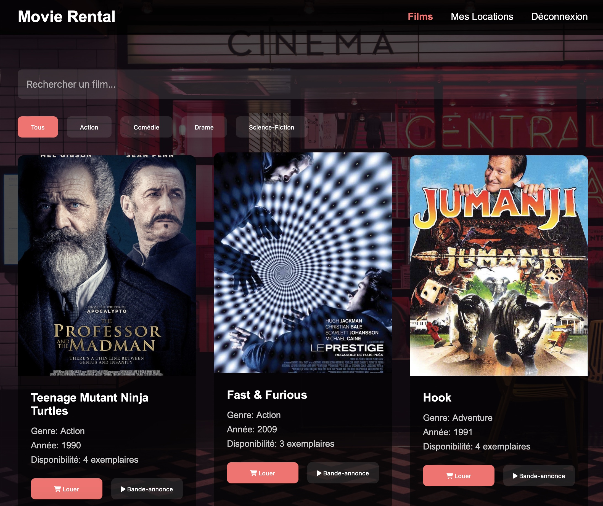

Voir le projet →
Plateforme de Location de Films
Une plateforme complète de location de films en ligne. Fonctionnalités : système d'inscription et de connexion, catalogue de films, gestion des locations, suivi des retours, et espace personnel pour voir l'historique des locations.
HTML5
CSS3
JavaScript
PHP
MySQL